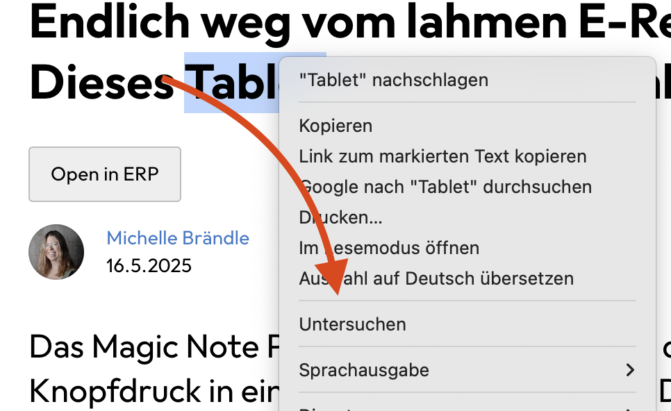
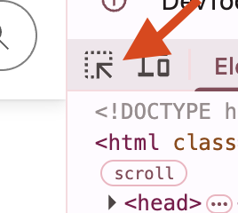

🨠CSS Einstieg
💡 Was ist CSS?
CSS steht für Cascading Style Sheets und bildet die Grundlage des Designs für jede Webseite.
🔠Wichtig: Sogar wenn du kein eigenes CSS definiert hast, gibt es ein CSS! Jeder Browser definiert dies über das "User Agent Stylesheet".
🔧 CSS im Browser untersuchen
📋 Schritt-für-Schritt-Anleitung
1. Beispiel-Seite öffnen
- Galaxus Artikel in Chrome öffnen
- Rechtsklick auf einen Bereich der Seite
- "Untersuchen" auswählen (oder F12 drücken)

2. Entwicklertools verstehen
Das Entwickler-Werkzeug wird auf der rechten Seite angezeigt. Die Position lässt sich umschalten.

3. Auswahl-Werkzeug aktivieren
- Auswahl-Werkzeug in der Toolbar aktivieren
- Ermöglicht das direkte Anklicken von Elementen

4. Element inspizieren
- Überschrift oder anderes Element anklicken
- CSS-Eigenschaften werden rechts unter "Styles" angezeigt

🏗️ CSS-Hierarchie verstehen
📊 Kaskadierung (Cascading)
Von unten nach oben gelesen:
| Priorität | Quelle | Beschreibung |
|---|---|---|
| Niedrigste | User Agent Stylesheet | Browser-Standard CSS |
| Mittlere | Website CSS | Entwickler-definierte Styles |
| Höchste | Spezifische Selektoren | Überschreibende Definitionen |
🔠Was du in den DevTools siehst:
- 📋 User-Agent-Stylesheet: Browser-Standard (unterste Ebene)
- 🯠Hierachische Definitionen: Von unten nach oben
- ✂️ Durchgestrichene Regeln: "Verlierende" CSS-Definitionen
- 🆠Gewinnende Definition: Letzte, spezifischste Regel
- 🤖 Framework-Klassen: Z.B.
.yDkbjfY3(automatisch generiert)
💡 Beispiel-CSS-Eigenschaft
margin-bottom: 16px; /* 16 Pixel Abstand unterhalb des Elements */
📚 CSS lernen
🯠Empfohlene Lernressourcen
🚀 FreeCodeCamp Tutorial
Link: Full Stack Developer Kurs
Vorgehen:
- CSS-Sektion auswählen
- Computer Basics überspringen (falls bereits bekannt)
- Responsive Web Design für Fortgeschrittene
📖 Lernweg-Struktur
1. CSS Basics
├── Selektoren
├── Eigenschaften
└── Werte
2. Layout-Konzepte
├── Box Model
├── Flexbox
└── CSS Grid
3. Responsive Design
├── Media Queries
├── Breakpoints
└── Mobile First
🨠Praktische Anwendung
🯠Nächster Schritt: Blog-Seite stylen
Nach dem Tutorial-Durchlauf:
- ✅ HTML-Grundgerüst (bereits vorhanden)
- 🨠CSS-Design hinzufügen
- 📱 Responsive machen
- ✨ Interaktivität erweitern
🔥 Ziel: Die Blog-Seite von einem reinen HTML-Gerüst zu einer ansprechend gestylten Webseite verwandeln!
💡 Best Practices
✅ CSS-Grundregeln
- 📠Kommentare für komplexe Bereiche
- 🏗️ Logische Struktur in CSS-Dateien
- 🯠Spezifische Selektoren verwenden
- 🔄 Wiederverwendbare Klassen erstellen
🔧 Browser-DevTools nutzen
- 🔠Live-Editing für schnelle Tests
- 📊 Computed Styles für finale Werte
- 🯠Element-Inspektion für Debugging
- 📱 Device-Simulation für Responsive Tests
🚀 Workflow-Empfehlung
📋 Entwicklungsschritte
- 🖼️ Design analysieren (Galaxus-Beispiel)
- 🏗️ HTML-Struktur überprüfen
- 🨠CSS schrittweise hinzufügen
- 🔄 Browser-Tests kontinuierlich
- 📱 Responsive optimieren
Bereit für kreatives CSS-Design! 🎉